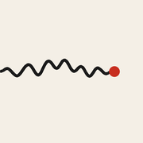

Seismic Shifts
Work
Description
Arc
Privacy
Support
Seismic Shifts — A long arc
A long-arc seismograph showing the presence of Deaf life and signed languages from 65,000 years before present to today. The trace runs at a historical baseline through the deep past of Aboriginal sign languages including Warlpiri and Yolngu, with parallel deep-time traditions including Plains Indian Sign Language. It rises slightly through European institutional emergence in the 18th and 19th centuries — Ponce de León, Bonet, l'Épée, Braidwood, the founding of the American School for the Deaf at Hartford, and Gallaudet College. It plummets sharply at the 1880 Milan Congress, deepens through the eugenics era of Alexander Graham Bell and his contemporaries, the 1907 Indiana sterilisation law, Australian assimilation policies, and the 1933 Nazi sterilisation law and Aktion T4. It rises slowly from 1960 onwards through Stokoe, the naming and recognition of Auslan, Deaf President Now, the official recognition of NZSL, and the 2010 ICED apology for the 1880 resolutions. The trace ends at 2026 still below the historical baseline. The right ten per cent of the page is intentionally left blank — the unwritten near future.
Seismic Shifts
A long arc — 65,000 years of presence and the seismic moments that have shaped it
A0 / 1189 × 841 MM / LANDSCAPE
RAVI VASAVAN / 2026
COMPANION TO THE DIGITAL TRACE
DEAF LIFE & SIGNED LANGUAGES — PRESENCE OVER TIME
EUGENICS ERA
UNWRITTEN
the near future,
not yet drawn
BASELINE
historical norm
CELEBRATED
SUPPRESSED
DEEP CONTINUITY
EARLY DOCUMENTATION
WESTERN INSTITUTIONAL EMERGENCE
SLOW RECOVERY
Aboriginal sign languages — Warlpiri, Yolngu, Arandic, Pitjantjatjara, Ngada, Western Desert
c. 65,000 BP — continuous transmission
Plains Indian Sign Language — Hand Talk
parallel deep-time signing tradition
c. 1550 — PONCE DE LEÓN
first documented European deaf education
1620 — BONET
first treatise on deaf education; manual alphabet
1755 — L'ÉPÉE
first free school for the deaf, Paris; LSF as language of instruction
1817 — HARTFORD
American School for the Deaf; ASL emerges
1864 — GALLAUDET COLLEGE
Washington, DC — chartered
1880
MILAN CONGRESS
164 hearing delegates vote to ban sign languages
from deaf education in favour of oralism
1883 — AGB
Memoir Upon the Formation
of a Deaf Variety…
Bell & contemporaries
1907 — INDIANA
first US sterilisation law
AUSTRALIAN ASSIMILATION POLICIES
suppression of Aboriginal languages, including Aboriginal sign systems
1933 — NAZI STERILISATION LAW
1939–45 — AKTION T4
~17,000 deaf people sterilised; thousands murdered
1960 — STOKOE
ASL shown to be a natural language
1975 — AUSLAN NAMED
1988 — DEAF PRESIDENT NOW
1995 — AUSLAN RECOGNISED
2003 — NZSL OFFICIAL
2010 — ICED APOLOGY
rejection of the 1880 resolutions
2026 — TODAY
not yet at the line it left
65,000 BP
10,000 BP
1500
1750
1880
1945
2026
— ?
TIME SCALE NON-UNIFORM — DEEP PAST COMPRESSED, MODERN ERA EXPANDED
Scroll to zoom · drag to pan
Detail